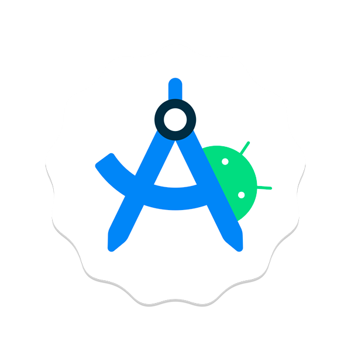

Rafael S. Pontes
cake23 Setembro 1998
location_onSuzano, São Paulo
Formação Acadêmica
Graduação
Sistema de Informação
UMC - Universidade de Mogi das Cruzes
Pós Graduação
Desenvolvimento de Aplicativos Móveis
PUCPR - Universidade Católica do Paraná
Desenvolvedor Mobile Android
Desenvolvedor focado na criação de aplicativos Android, combinando Kotlin e Java para entregar soluções com alta performance e excelente usabilidade.
Tenho dedicação à construção de interfaces limpas seguindo as diretrizes do Material Design e à aplicação de boas práticas, garantindo um código escalável e de fácil manutenção.
Tecnologias
-
Git
-
GitHub
-
VS Code
-

Android
Studio
Linguagens
-
HTML5
-
CSS3
-
Java
Script -
Java
-
Kotlin
-
Dart
-
Micro
Python
Frameworks
-
Android
SDK XML -
Flutter
-
Jetpack
Compose